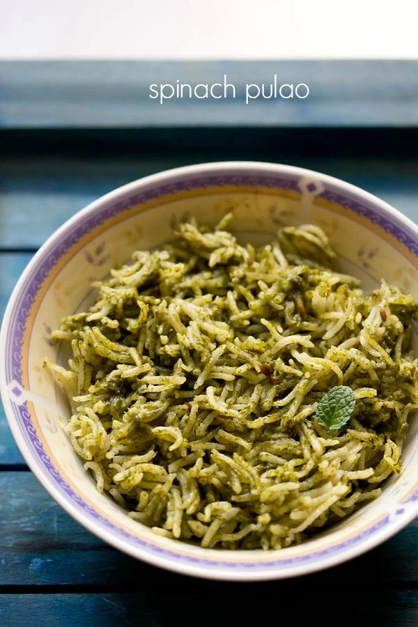

Palak Rice

Description
Palak rice, also known as Spinach rice is a healthy variation of pilaf or pulao made with spinach puree, rice, onions, spices and herbs.
This delightful recipe is ready in 30 minutes and makes for a nutritious meal when paired with salad, pickle or raita.
In this healthy homemade version of palak rice, you can add your choice of mixed veggies.
Ingredients
- Palak (spinach), 1 cup
- Basmati rice, 1.5 cups
- Few coriander leaves
- 2 green chillies
- Quarter cup green peas
- 1 onion
- 2 cloves of garlic
- 1 tsp oil
- 2 bay leaves
- Salt
Steps
- Wash the rice and soak it in 3 cups of water for 20 minutes.
- Wash the spinach and the coriander leaves. Chop the onions lengthwise.
- In a pan add few drops of oil and saute the palak, green chili, coriander leaves. Do not saute for a long time. ensure not to change the colour.
- Grind this palak mixture into a fine paste. If needed add very little water.
- In a pressure cooker add oil and add the bay leaf and add the onions. Cook the onions till they turn translucent.
- Add the ground spinach paste to this and saute for a minute. Add salt to this.
- Add the soaked rice by keeping the water aside. Saute the rice for a minute and add in the water.
- Cover the lid and cook till one whistle. Keep the flame in very small for 10 minutes and switch it off. Once the pressure is released, fluff it up with fork.
- Palak Rice is ready to serve. You can pair it with Tomato Shorba or Mushroom Pepper Fry
Back to Homepage